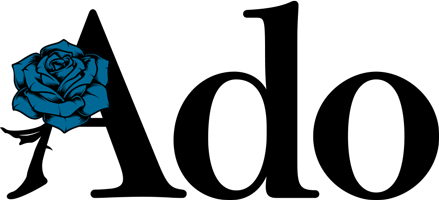
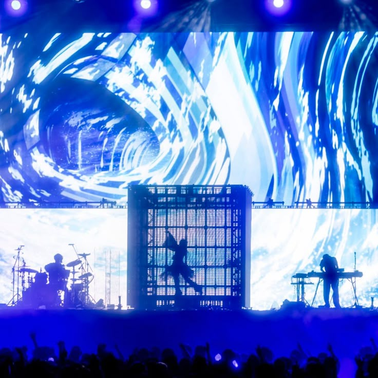
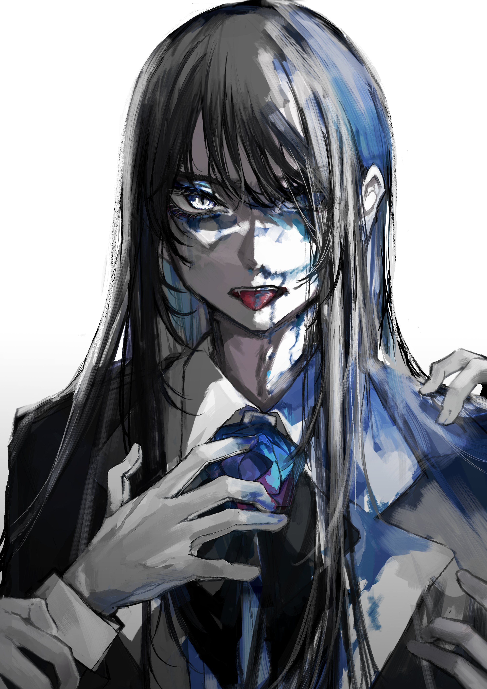

A Voz Que Paralisou o Japão

Sobre a Ado

Ado é uma cantora japonesa nascida em Tóquio em 2002. Ela pertence à vertente dos chamados utaite — artistas independentes da internet (frequentemente associados ao universo do Vocaloid) que gravam covers e músicas autorais sem revelar suas identidades reais. Sua marca registrada é a capacidade única de alternar entre extremos com a sua voz, podendo ir de susurros para gritos rasgados em questão de segundos.
O nome artístico Ado tem uma origem curiosa, sendo inspirado no teatro tradicional japonês Kyogen. Enquanto o shite é o ator principal, o ado é o ator coadjuvante. O nome foi escolhido ainda na infância da cantora como forma de expressar seu desejo de que suas músicas sirvam como uma espécie de "coadjuvante" ou trilha sonora de apoio para a vida de seus ouvintes, ou seja, ela queria que sua arte estivesse presente para acompanhar as pessoas em seus momentos cotidianos, dores e alegrias.
Como ela começou sua carreira?
Fascinada pelo universo Vocaloid (como Hatsune Miku) desde a infância, Ado começou a treinar sua voz na adolescência. Como não tinha dinheiro para um estúdio profissional, ela transformou o próprio armário (closet) em uma cabine de gravação acústica, colando materiais improvisados nas paredes para abafar o som. Em janeiro de 2017, aos 14 anos, ela publicou seu primeiro cover na internet (Kimi no Taion) e aos poucos, passou a construir uma reputação no cenário underground digital por causa de sua técnica e expressividade.
A grande virada de chave aconteceu em outubro de 2020. Com apenas 17 anos, Ado fez sua estreia oficial por uma grande gravadora (Virgin Music) com o single digital "Usseewa". A música, que se tornou um hino de rebeldia para muitos jovens no Japão, virou um fenômeno viral estrondoso no Japão, alcançou o 1º lugar na Billboard Japan e acumulou centenas de milhões de visualizações, transformando-a da noite para o dia em uma estrela nacional.
O salto definitivo para o estrelato internacional ocorreu quando ela foi escolhida para dar voz cantada à personagem Uta na trilha sonora do filme One Piece Film: Red. O carro-chefe da trilha, "New Genesis" (Shin Jidai), dominou os charts globais de streaming, colocando Ado no mapa mundial da música e abrindo as portas para turnês globais esgotadas.
Discografia
Álbum KyōgenOs Grandes Fenômenos e Hinos Globais
O título (Kyōgen) faz referência ao teatro cômico tradicional japonês — o mesmo que inspirou seu nome artístico. O álbum funciona como uma vitrine estrondosa de seus primeiros sucessos e consolidação na indústria.
- -"Usseewa" (2020): O marco zero de sua carreira. Uma explosão de punk-rock e rebeldia adolescente que carrega vocais furiosos, guitarras pesadas e uma crítica social afiada.
- -"Odo" (2021): Uma faixa eletrônica altamente enérgica com influências de dancehall e festas tradicionais japonesas.
- -"Gira Gira" (2021): Composta por Teniwoha, mistura uma estética cabaré/jazz sombrio com uma letra profunda e melancólica sobre autoimagem, beleza e o reflexo nos espelhos.
Álbum Zanmu e Lançamentos RecentesO Lado Teatral e Eletrônico
É um álbum mais maduro, sombrio e diversificado. Ele compila os grandes singles lançados entre 2023 e 2024, explorando temas profundos sobre identidade, fama, existencialismo e o peso de viver sob os holofotes (mesmo nas sombras).
- -"Show" (2023): Um verdadeiro furacão de circo sombrio e batidas de EDM/Giga. Virou febre mundial nas redes sociais devido à sua estrutura imprevisível e refrão magnético.
- -"Value" (2024): Uma música mais alternativa e reflexiva, que traz uma sonoridade urbana envolvente e madura.
- -"Kura Kura" (2023): Tema de abertura da segunda temporada de Spy x Family. Uma mistura fascinante de jazz moderno com arranjos de sopro acelerados.
- -"Kira" (2026): Lançada como hino/canção oficial em colaboração para a coleção da Seleção Japonesa de Futebol, destacando a força motivacional e enérgica da artista.
Ado's Utattemita AlbumAs Reinterpretações Brilhantes
- -"Unravel" (Cover de TK from Ling tosite sigure): A famosa abertura de Tokyo Ghoul. A interpretação de Ado eleva a música a outro patamar, com gritos rasgados e uma entrega emocional visceral que chocou os fãs.
- -"Aishite Aishite Aishite" (Cover de Kikuo): Uma música originalmente de Vocaloid com uma temática perturbadora e melodia caótica, que casa perfeitamente com a capacidade vocal da Ado.
- -"Crime and Punishment" (Tsumi to Batsu): A faixa, obra-prima original de Sheena Ringo, ganha nova vida na voz de Ado, que transita entre o desespero silencioso e explosões vocais dramáticas. A música traduz perfeitamente a estética de caos existencial, solidão urbana e intensidade emocional que marca a identidade artística da cantora.
Outros Projetos Relevantes
Ado emprestou sua voz para cantar as músicas da personagem Uta (filha de Shanks) no filme de anime One Piece Film: Red. Cada faixa foi produzida por grandes nomes da música japonesa (como Yasutaka Nakata, Vaundy, Hiroyuki Sawano e Moto Hata).
- -"New Genesis" / Shin Jidai (2022): O hino global de One Piece Film: Red. Produzido por Yasutaka Nakata, combina notas agudas celestiais com uma batida eletrônica futurista que quebrou recordes mundiais.
- -"Tot Musica" (2022): Também parte do universo de One Piece, é uma obra-prima dramática e quase operística composta por Hiroyuki Sawano, explorando o lado mais sombrio, coral e caótico da voz de Ado.
- -"Blacklight" / Gyakkou (2022): Composta por Vaundy (um dos nomes mais quentes do indie-rock japonês atual), esta faixa foi o segundo grande pilar do fenômeno One Piece Film: Red, servindo como o tema central de Uta no filme.
O Marco Introspectivo:
-"Vivarium" (2026): Mais do que um simples single, "Vivarium" é uma obra pessoal escrita e composta pela própria Ado. Lançado para acompanhar seu livro autobiográfico "Vivarium: Ado to Watashi" (Ado e Eu), o single explora sonoridades de math rock/post-hardcore e traz uma letra em que ela "conversa com seu eu atual", abordando a busca por luz em meio a lutas internas.
O lançamento veio acompanhado de seu primeiro videoclipe em live-action (ação real). Dirigido por Kyotaro Hayashi, o clipe gerou enorme repercussão mundial ao misturar animações de seu icônico persona com cenas reais e recortes de sua silhueta e perfil no mundo físico — quebrando barreiras e marcando um dos capítulos mais corajosos e íntimos de sua trajetória artística até hoje.